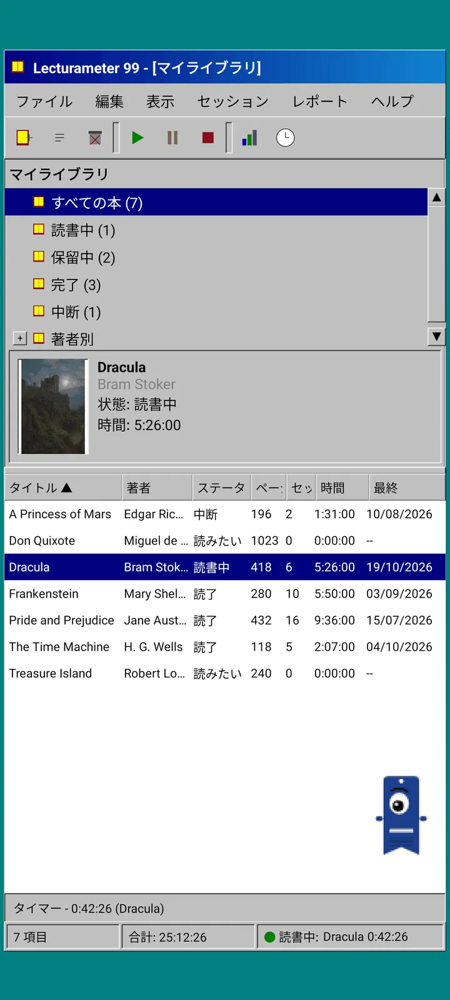
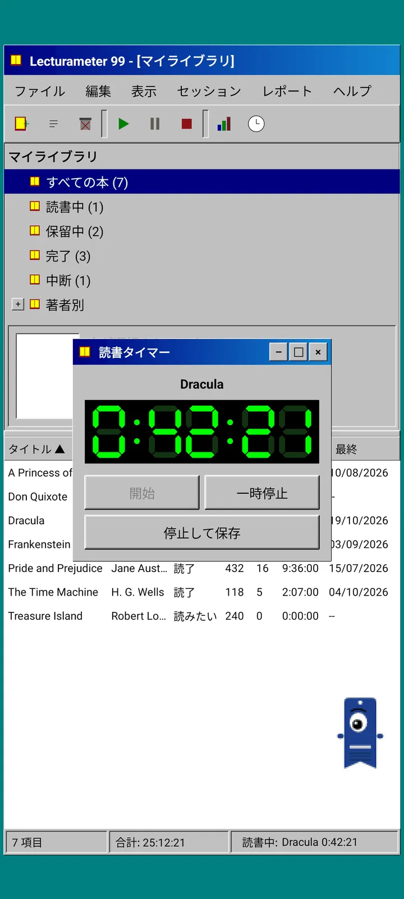
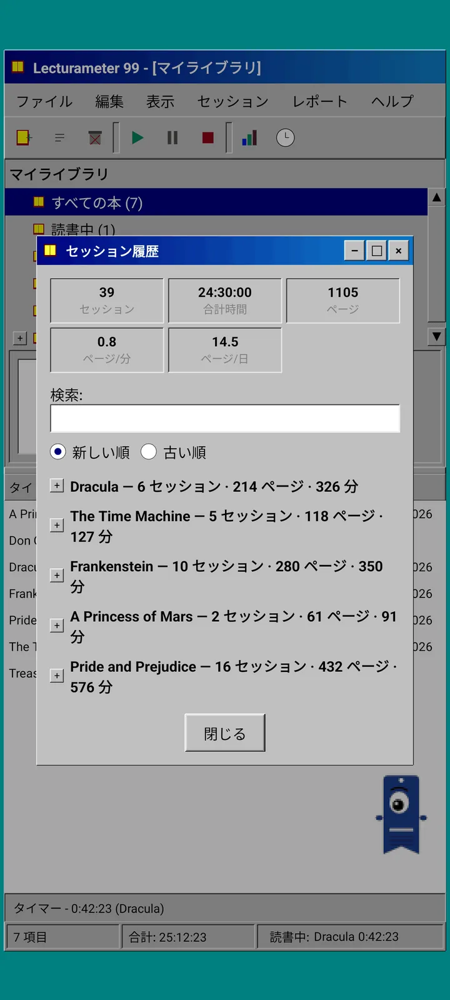
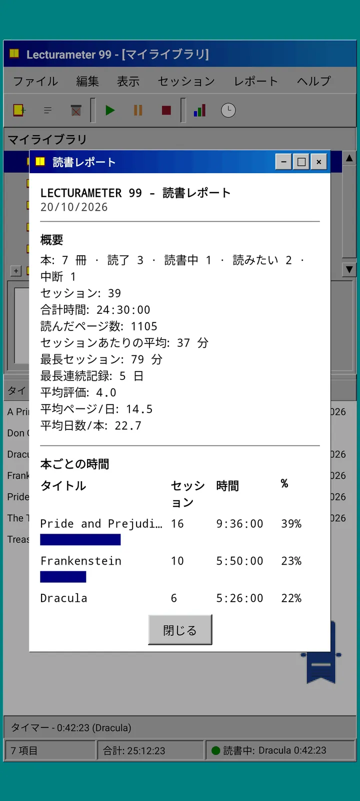

ブログ · 2026-09-24
Lecturameter 1999: Lecturameter が昔のPCソフトだったらどんな姿になるのか?
ウィンドウ、メニュー、表、LCDタイマーを備え、実際のバックアップを開ける、もうひとつの Lecturameter クライアント。生まれた経緯、できること、あえて省いたこと。Play Store と App Store で無料公開予定です。
Lecturameter 1999 は、ここ数か月ずっと温めてきました。急ぐこともなく、計画もないまま、あちこちで少しずつ作ってきたものです。本気で取り組み始めたのは、iOS版が思っていたより単純で、仕上げる余裕ができるとわかってからでした。
実験はこれだけではありません。Lecturameter の世界には、頭の中にある別のプロジェクトがいくつかあり、かなり進んでいるものもあれば、ほとんど手つかずのものもあります。その大半は、おそらく日の目を見ないでしょう。
どこから生まれたのか?
すべては、しばらく前から気になっていたひとつの実験から始まりました。
アイデアは、まったく異なる設計の前提のもとで、Lecturameter をゼロから何度も作り直してみることでした。本物のアプリには手を触れず、置き換えるつもりもありません。そうして七つのバージョンができました。ひとつは2016年のAndroidアプリを真似たもの、ひとつは2036年にどう見えるかを想像したもの、ひとつはライブラリを本棚に見立て、読むほど背表紙が厚くなるもの、そしてもうひとつは二画面の携帯ゲーム機向けに設計したものです。
いちばん気に入ったのが1999年版でした。九十年代後半のデスクトッププログラムで、情報が詰まっていて実用本位、すべてがウィンドウとメニューと表でできています。これを楽しみながら少しずつ仕上げて、本物の Lecturameter のデータを土台にした完全なクライアントにすることにしました。
それはどんなもの?
Lecturameter 1999 は、Lecturameter とは別の独立したアプリです。開くと、ティールグリーンのデスクトップの上に、最大化されたウィンドウがひとつ表示されます。上にはタイトルバーとメニュー(ファイル、編集、表示、セッション、レポート、ヘルプ)、その下にはドット絵のアイコンが並ぶツールバーがあります。中央のエリアは二つに分かれていて、ライブラリのツリーと表紙のプレビュー欄、そして一冊につき一行の表が並びます。いちばん下のステータスバーには、アイテム数、合計時間、いま読んでいる本が表示されます。



Lecturameter と同じデータ
ここが、この実験を実際に使えるものにしている部分です。1999風の外見の下には、本物の Lecturameter のデータモデルがそのまま入っています。同じ本、同じセッション、同じステータス、評価、メモです。エクスポートされるバックアップは Lecturameter がエクスポートするのと同じファイルで、読み込めるのも同じファイルです。
つまり、ファイルメニューからバックアップをインポートすれば、ライブラリ全体を1999風の表で見られます。LCDタイマーで一週間読んで、エクスポートし、新しいセッションを持って最新のアプリに戻る。その間に失われる項目はひとつもありません。Goodreads の CSV も、読み込みも書き出しもできます。
本の検索は Lecturameter と同じです。アプリ独自のカタログと Google Books に問い合わせて、タイトル、著者、ページ数、ISBN、表紙を入力します。表紙はポスタリゼーションをかけ、スムージングなしで描画するので、当時のGIF画像のように見えます。
セッション、履歴、レポート
読書の流れは Lecturameter と同じで、それをウィンドウに置き換えたものです。表で本を選んで、再生ボタンを押します。タイマーのウィンドウが開き、黒地に緑の七セグメント表示が現れます。ウィンドウは動かしても、タスクバーに最小化しても、閉じても構いません。時間はステータスバーで数え続けます。
停止を押すと、セッションの保存ダイアログが開きます。日付、分数、最初と最後のページ、コメントを入力します。入力しながら、ページ数とペースが計算されます。本の最後のページに達すると、読み終えたかどうかを尋ねられます。手動のセッションは、セッションメニューから追加できます。
履歴では、セッションが本ごとに、プラスとマイナスで開閉するツリーにまとめられます。上部には五つの数字が並びます。セッション数、合計時間、ページ数、一分あたりのページ数、一日あたりのページ数です。セッションをダブルタップで編集、長押しで削除できます。
統計は、プリンターから出てきたような等幅テキストの読書レポートです。最長の連続記録と平均評価をまとめた概要、ブロックのバーで表した本ごとの時間、一日あたりのページ数で見る速さ、毎日読んだページ数に応じて文字で描いた一年分のカレンダー、そして直近七日間が載っています。



Pagi 99
Pagi も1999年にやってきます。片目のしおりのシルエットは同じですが、ドット絵になっていて、当時のオフィスアシスタントのように画面の上を自由に動き回ります。指でドラッグでき、タップすると短いひと言を話し、していることによって表情が変わります。本を探しているときは考え込み、タイマーが動いているときは読書をし、セッションを保存したり本を読み終えたりすると喜びます。
アプリのヒントは、Pagi に吹き出しでつながった黄色いバルーンとして、一回ずつ表示されます。もう一度見たいときは、ヘルプの「今日のヒント」にあります。



あえて入れなかったもの
Lecturameter 1999 は、意図的にシンプルにしてあります。これは実験で、原則として、公開後にこれ以上の開発はしません。新機能は、これからも Lecturameter に追加されていきます。
作りながら、読書の流れに影響しないものはすべて外すと決めました。だから Lecturameter 1999 には Pro がありません。見たままが、手に入るものです。
Lecturameter 1999 は、Lecturameter が対応しているすべての言語で公開されます。